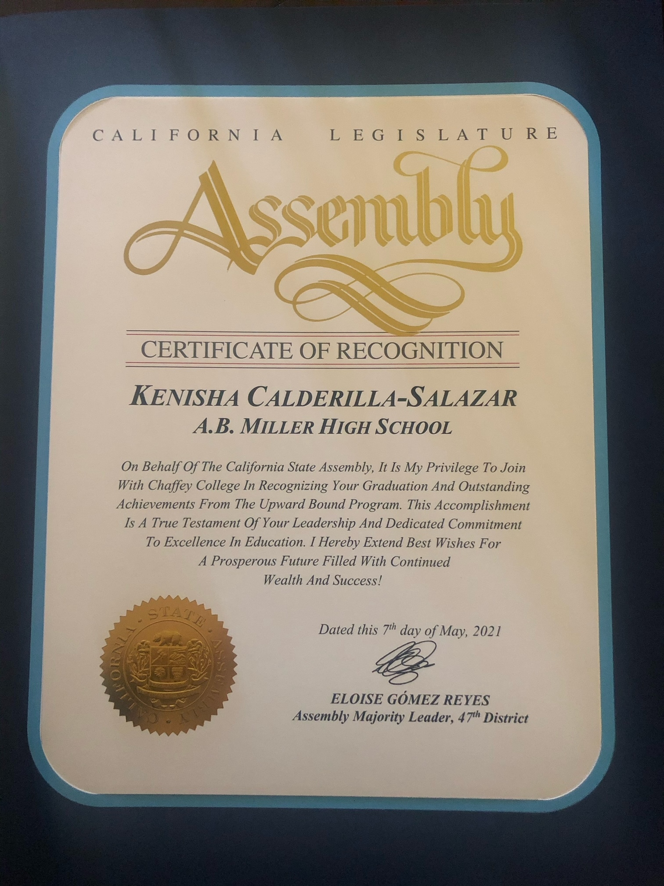
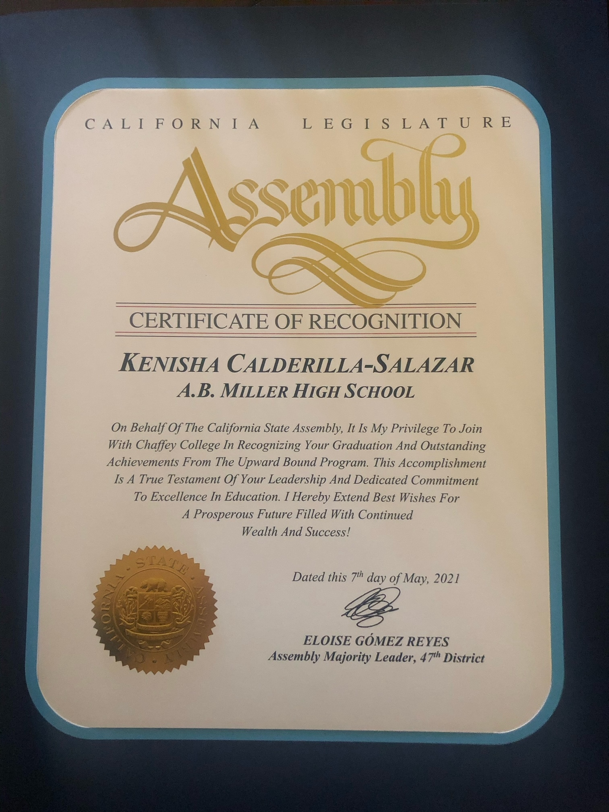

Kenisha Calderilla
My name is Kenisha Calderilla and I am currently a second-year undergraduate student at University of Riverside. I am studying Political Science with the hopes of becoming a Family Law or Immigration Attorney. After undergraduate, I plan on taking a gap year to study for the LSAT in order to apply and be accepted into established and accredited law schools.
Additionally, I plan on completing internships in my local area to give me a glimpse into what my life could look like as an attorney.With this experience, I know I will have an advantage to employers if I show that I am commited to gaining experience, as well as having familiarity to the work environment.
I am currently looking and applying to these internships as I complete my undergraduate education. I have years of experience working and volunteering with my local community, and this will help with the interpersonal skills I developed to work with a team in a working environment. With my work and volunteering experience,I have gained the skills and work ethnic needed to complete deadlines, as well as interacting with clients and meeting their needs.
Experience
Cashier
• Worked as a cashier at T.J. Maxx
• Helped customers find what they needeed and answered questions.
• Also worked at cashier register and have experience with data entry.
Volunteer
• Helped with painting over graffiti
• Helped with feeding animals
• Cleaned up trash in outside areas
• Kept ponds and enclosures clean
Education
UC Riverside
Portfolio


